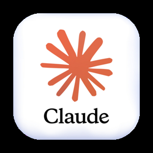
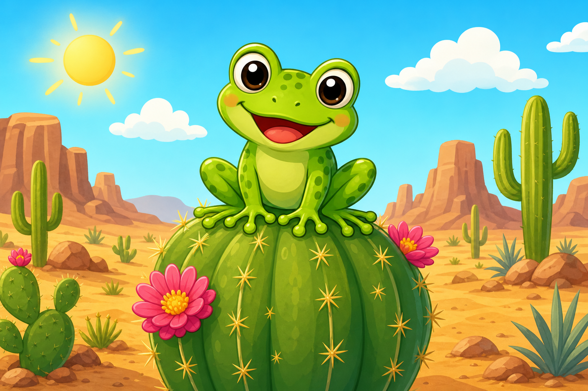
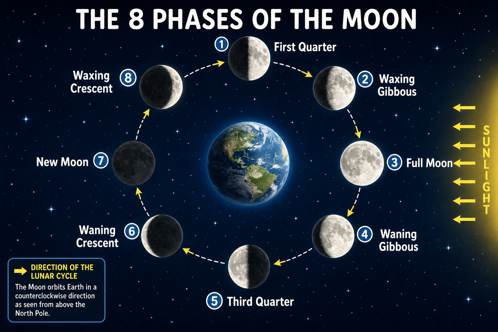
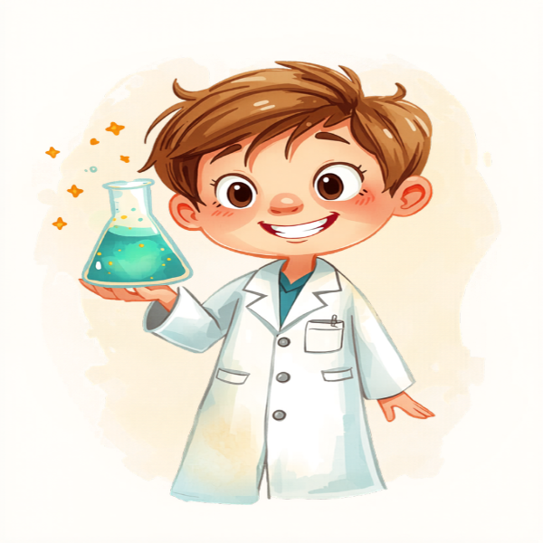
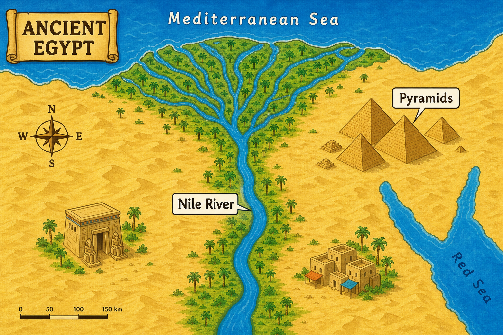

Step 1 of 5 — AI Can Draw

Claude or ChatGPT or Gemini or Copilot🖼️ AI Can Draw — And It's Amazing
AI image generators let you describe any picture in words and the AI creates it for you in seconds. No clipart hunting, no stock photo subscriptions, no design software.
Imagine you need an illustration of a frog adapting to a desert environment, a diagram showing the phases of the moon, or a cartoon scientist for a worksheet header. Just describe it — and it appears.






Step 2 of 5 — The Best Tools
🛠️ The Best AI Image Tools for Teachers
There are several tools available. Here are the most teacher-friendly options:
ChatGPT (chatgpt.com) Free tier available
ChatGPT can generate images directly in the chat. Just ask it to "draw" or "create an image of" something and it will create one for you.
Best for: Detailed illustrations, classroom posters, story scenes, labeled diagrams.
Google Gemini (gemini.google.com) Free tier available
Gemini can generate images right inside the chat. If you use Google Workspace at school, Gemini is already part of your ecosystem and easy to access.
Best for: Educational maps, illustrated scenes, colorful classroom visuals.
Canva AI (canva.com) Free for teachers
Canva is a free, popular design website that many teachers already use to make posters, newsletters, and worksheets — you may have heard of it. It also has built-in AI image generation. The big advantage: create an image AND drop it straight into your design — all in one place, without switching between apps. Canva's full paid version is free for teachers.
Best for: Worksheets, posters, newsletters, and slide decks — when you need the image AND the design in one place.
Perplexity (perplexity.ai) Free tier available
Perplexity lets you generate images using several different AI tools — all from one place. Great for quickly comparing styles or finding the look you want without switching between apps.
Best for: Quickly comparing image styles across different AI models without switching between apps.
Microsoft Copilot (copilot.microsoft.com) Free tier available
Copilot can generate images directly in the chat using Microsoft Designer — Microsoft's built-in image creation tool. If your school uses Microsoft programs, you may already have access.
Best for: Microsoft schools — generate images right inside the tool you already use, no extra accounts needed.
Step 3 of 5 — Writing Image Prompts
💬 How to Write a Great Image Prompt
Image prompts work differently from text prompts. Instead of giving instructions, you're describing a picture — what's in it, the style, the mood, and the colors.
The formula for a strong image prompt:
Example: "A friendly cartoon elephant [subject] reading a book in a library [setting], watercolor illustration style [style], soft pastel colors, child-friendly [details]"
Style words to know:
- Cartoon / illustrated — fun, colorful, great for younger students
- Watercolor — soft, artistic, works well for stories and reading corners
- Realistic — looks like a photograph, good for science topics
- Flat / minimal — simple, clean shapes with no shadows or textures, great for diagrams and icons
- Diagram / labeled chart — ask for this when you want educational visuals with labels
Tips for better results:
- Be descriptive, not vague. Instead of "a dog," try "a golden retriever puppy sitting in a field of sunflowers, happy expression, cartoon illustration style."
- Say what you DON'T want. Add "no text in the image," "no scary elements," or "simple background" to guide the AI away from unwanted results.
- Ask for revisions. If it's not right, describe what to change: "Make it more colorful," "Change the background to white," or "Make the character look younger."
- Generate multiple versions. Ask the AI to "generate 4 different versions" so you have options to choose from.
Step 4 of 5 — Ready-Made Prompts
📋 Ready-Made Image Prompts for Classrooms
Copy any of these into ChatGPT, Gemini, or Copilot and ask it to generate an image. Customize the topic as needed. (Remember: Claude describes images in words rather than creating them — use one of the other tools for this step.)
Create a simple, clearly labeled diagram of the water cycle showing evaporation, condensation, precipitation, and collection. Use a clean, flat design style with blue and green colors. Make it appropriate for 4th grade students.
Illustrate a friendly cartoon [animal or character] holding a pencil and looking curious. Colorful, fun, child-friendly cartoon style. White background. The character should look like a helpful classroom mascot.
Create an illustrated scene showing [historical event or time period]. Style: colorful educational illustration similar to a children's history book. Include key details that represent the time period. No text in the image.
Design a motivational classroom poster with the message "[YOUR QUOTE OR MESSAGE]". Use bright, bold colors, large readable text, and a fun illustrated border. Style should be energetic and appropriate for elementary school students.
Create a watercolor-style illustration for a children's story where [describe the scene]. Include [main character description]. Soft, warm colors, gentle storybook illustration style. No text in the image.
Create a clear visual showing [math concept, e.g., "equivalent fractions using pizza slices" or "a number line from 0 to 20"]. Clean, flat design, bright colors, labeled clearly. Appropriate for [grade] students.
Step 5 of 5 — Try It
🏫 10 Ways to Use AI Images in Your Classroom
- Custom worksheet headers and borders that match your unit theme.
- Illustrations for reading passages you created with AI in Lesson 2.
- Vocabulary cards with a picture showing the meaning of each word.
- Story starter images — show students a mysterious scene and have them write about it.
- Science diagram visuals to display on your projector during a lesson.
- Bulletin board backgrounds and decorations.
- Class newsletter graphics and parent communication visuals.
- Portraits of historical figures for a timeline or display.
- Maps and geographic visuals for social studies units.
- Reward certificates and classroom incentive materials.
✏️ Try It Right Now
Pick any topic from your current unit and generate your first AI image in under 3 minutes:
- Open ChatGPT (chatgpt.com), Google Gemini (gemini.google.com), or Perplexity (perplexity.ai) — all free to start.
- Think of one image that would be useful in your classroom right now — a diagram, a character, a scene, a poster.
- Use the formula: [Subject] + [Setting] + [Style] + [Details] — write your description.
- Type "Generate an image of…" followed by your description and send it.
- If it's not quite right, ask for a revision: describe one specific thing to change.